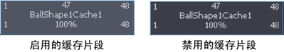

注： 启用或禁用几何缓存片段也将启用或禁用其相应的缓存节点。
启用或禁用单个几何缓存片段
- 在场景视图中，选择要启用或禁用其几何缓存片段的对象。
- 在“Trax 编辑器”(Trax Editor)中，选择要启用或禁用的几何缓存片段。
- 执行下列操作之一：
- 在轨迹视图中，在选定的缓存片段上单击鼠标右键。在显示的菜单中，打开“启用片段”(Enable Clip)使缓存片段变为活动状态，或者关闭“启用片段”(Enable Clip)使缓存片段变为非活动状态。
- 在 Trax 菜单栏上，选择可使选定的缓存片段变为活动或非活动状态，具体取决于其当前状态。
